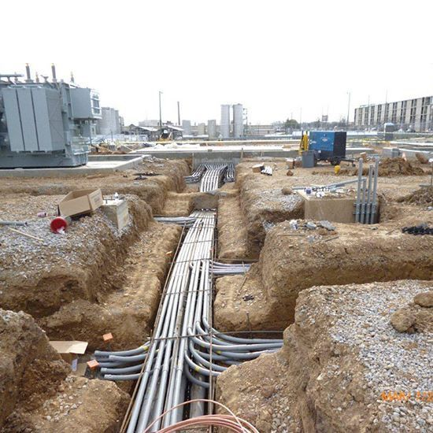
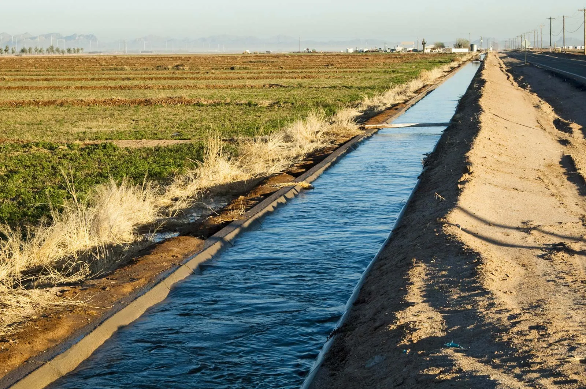

Infrastructure Works department
ROAD WORKS
earthworks
soap and sub-grid works
asphalt works
asphalt painting works
interlock and tile works
networks works
torrent networks
sewerage networks
water networks
lighting networks

electricity networks
telecommunications networks

Irrigation and agriculture networks